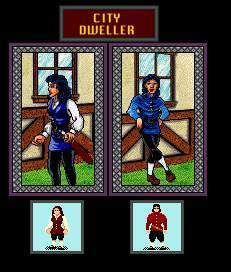

|
| The Races of Drakkar |
 |
|
 |
 |
 |
 |
| Back to Main Page. |
| Town dwellers are the most commom race in the Kingdom of Drakkar. An all-purpose character, human in appearance, they enjoy socializing and the hustle and bustle of city life. City dwellers are apt to be strong and to have very good luck, which they need given their love for gambling. Can roll all stats at 18. |
| Forest dwellers are tall, slim humanoids with pointed ears. They are very elegant and delicate in appearance, and speak in a melodious tongue. They tend to be agile and extremely charismatic, with high intelligence. Some say when they lift their voices in song, the trees around them are apt to tremble at their beauty. Can roll 19 in Charisma. Roll 17 Luck max. |
| Mountain dwellers are short, stocky, hardy individuals with leathery skin. They have good constitutions and are very strong. They tend to have terrible luck, but start out with more gold than any other race. And their skills as fighters keep their sacks full. Can roll 19 STR but on 17 max in Charisma |
| Outcasts, as the name applies, are shunned by most other races. Outcasts' strengths and weaknesses have long been hidden by their secretive and solitary existence, but are rumored to have great strength but little luck. Can roll 19 CON and AGI but 16 CHR max. |
| Underground dwellers are extremely short and childlike in appearance. But don't underestimate them, because they are great fun once you get a few ales down them. In addition, they are extremely agile and have strong constitutions. As with Outcasts, Lady Luck rarely smiles on them. |
| Woodlands dwellers are a racial blend of City dwellers and Forest dwellers, being neither one or the other, but something both in between and unique. They tend to have good agility, intelligence and willpower. Many of the great mentalists of Drakkar are Woodlands dwellers. Can roll 19 INT but 17 STR max. |